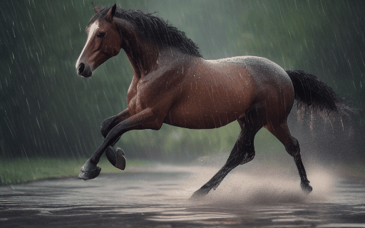
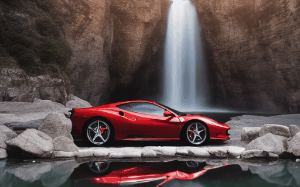

Learning Multiple Motion Concepts ⇨ Generating Composite Motions
|
"A beautiful girl plays the guitar
under fireworks in the sky." |
"A helicopter and many birds
fly over the sea." |
"A horse is running

in the rain." |
"A Pikachu plays the guitar in the
garden besides a waterfall." |
|---|
Learning Single Motion Concept ⇨ Few-Shot
|
"A branch in rain."
|
"A woman plays the guitar"
|
"Apache flies in sky."
|
"Waterfall and a Ferrari."

|
|---|
Learning Single Motion Pattern ⇨ One-Shot
|
Input Video |
"A jeep car is moving
on the snow." 
|
Input Video |
"A girl runs beside a river,
Van Gogh style." |
|---|